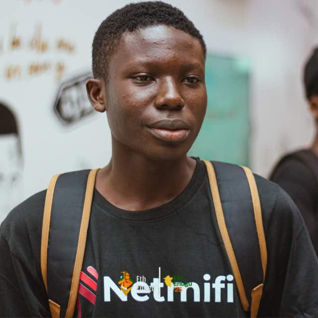

Router Network Mode Control (2G/3G/4G/5G)
Implemented firmware-level control for dynamically switching modem network modes using AT commands. Integrated into router UI for real-time control and improved network optimization.
View DetailsEmbedded Systems Engineer | OpenWrt Developer | Edge AI Researcher

I am a systems-focused engineer specializing in embedded Linux, router firmware, and edge AI deployment. My work centers on modifying and extending OpenWrt-based systems to support advanced networking control, hardware interaction, and on-device intelligence.
At Wicrypt, I operate within R&D, working on firmware-level features, network behavior control, and integrating lightweight AI models into constrained hardware environments such as low-power routers.
My interests lie in optimizing performance under strict hardware limitations, bridging networking with AI, and building resilient systems that operate efficiently at the edge.
Implemented firmware-level control for dynamically switching modem network modes using AT commands. Integrated into router UI for real-time control and improved network optimization.
View Details
Built packet-level monitoring using tcpdump and system hooks on OpenWrt. Explored limits of traffic visibility under HTTPS and router constraints.
GitHub
Benchmarked TinyLlama and Phi-3 Mini on a dual-core router. Optimized inference speed vs response quality under severe CPU and memory constraints.
View DetailsExplore my work on embedded systems, networking experiments, and AI deployment.
Open to engineering collaborations, embedded systems work, and research opportunities.
Email: abuashiaemereh@gmail.com